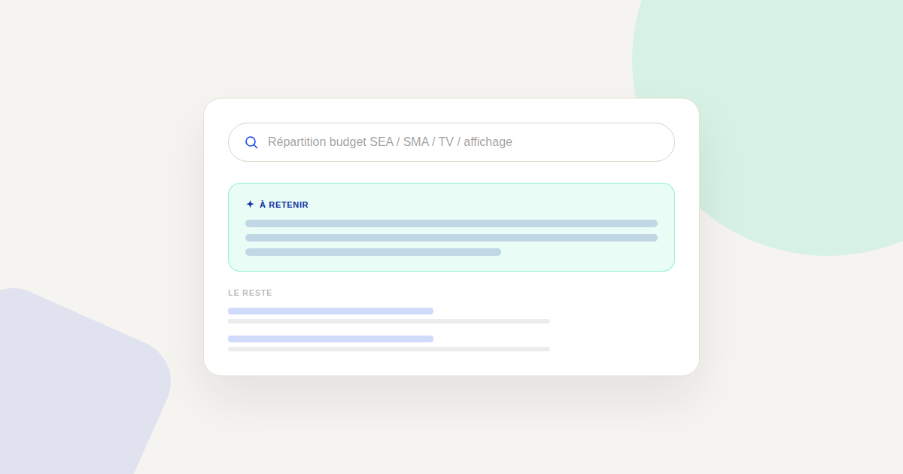
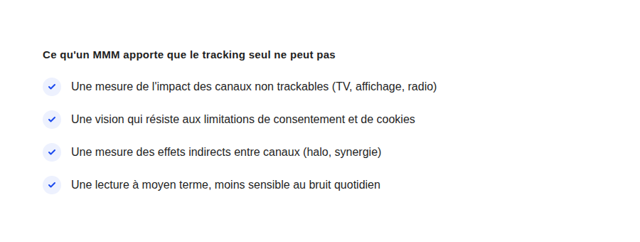

Marketing Mix Modeling : une alternative au tracking pour les moyennes entreprises
À mesure que le tracking individuel se complique (consentement, navigateurs, réglementation), le Marketing Mix Modeling revient sur le devant de la scène — une méthode plus ancienne que le tracking digital lui-même, mais qui répond justement à ce que le tracking ne peut plus garantir seul.

Le Marketing Mix Modeling (MMM) est une méthode statistique qui analyse l'impact de chaque canal marketing sur un résultat business (ventes, leads) à partir de données agrégées dans le temps, plutôt qu'à partir du suivi individuel d'un visiteur. C'est l'approche historique du marketing avant l'ère du tracking digital granulaire — et elle redevient pertinente précisément parce que ce tracking granulaire devient de moins en moins fiable seul.
Pourquoi ce retour en grâce n'est pas une mode
Le consentement RGPD, la disparition progressive des cookies tiers et les limitations imposées par les navigateurs réduisent structurellement la part de trafic qu'on peut suivre individuellement d'un point de contact à l'autre. Le MMM ne dépend pas de ce suivi individuel : il corrèle des investissements par canal, sur des périodes données, avec des résultats business globaux — une approche qui reste valide quel que soit le niveau de consentement au tracking.
Ce que le MMM apporte que le tracking classique ne peut pas
- La mesure des canaux non trackables. Une campagne TV, un affichage urbain, une présence radio n'ont pas de lien cliquable à suivre — le MMM permet néanmoins d'estimer leur contribution en observant les variations de ventes corrélées aux périodes de diffusion.
- Les effets indirects entre canaux. Une campagne de notoriété peut augmenter les recherches de marque et donc les conversions SEA, sans qu'aucun clic ne relie directement les deux — un effet que le tracking au clic ne capture jamais, mais que le MMM peut isoler statistiquement.
- Une lecture moins sensible au bruit quotidien. Le MMM travaille sur des tendances de moyen terme plutôt que sur l'attribution événement par événement, ce qui le rend plus stable face aux fluctuations ponctuelles qui perturbent souvent les tableaux de bord d'attribution classique.

Les limites qu'il faut connaître avant de s'y lancer
Le MMM demande un historique de données conséquent (généralement plusieurs années de dépenses et de résultats par canal) pour produire un modèle statistiquement fiable — une contrainte qui l'écarte de fait des entreprises jeunes ou avec un historique de données limité. Il produit aussi des résultats agrégés, utiles pour arbitrer un budget entre grandes masses de canaux, mais peu adaptés à l'optimisation fine d'une campagne au jour le jour, un rôle que le tracking digital classique continue de mieux remplir.
À partir de quelle taille ça devient pertinent
Dans la pratique, le MMM devient réellement rentable à partir d'un budget marketing multi-canal conséquent et d'un historique de données suffisant pour alimenter le modèle : en dessous de ce seuil, le coût de mise en place dépasse généralement la valeur des arbitrages qu'il permettrait. Pour une petite structure, un tracking digital bien configuré reste largement suffisant et plus rentable à mettre en œuvre.
MMM et tracking digital : complémentaires, pas concurrents
Les entreprises qui en tirent le meilleur parti ne remplacent pas leur tracking digital par le MMM : elles utilisent le tracking pour l'optimisation fine et quotidienne des campagnes digitales, et le MMM pour les arbitrages budgétaires de plus haut niveau entre grandes catégories de canaux, y compris ceux que le tracking ne peut structurellement pas couvrir.
FAQ
Le MMM peut-il remplacer complètement GA4 et le tracking classique ?
Non, les deux répondent à des besoins différents : le tracking digital reste plus précis pour l'optimisation quotidienne des campagnes en ligne, le MMM est plus pertinent pour les arbitrages budgétaires globaux et la mesure des canaux non trackables.
Combien de temps faut-il pour construire un modèle MMM fiable ?
Cela dépend du volume et de la qualité de l'historique de données disponible : plus l'historique est long et propre, plus le modèle statistique produit sera fiable.
Le MMM est-il accessible sans équipe data dédiée ?
Des outils et prestataires spécialisés existent pour construire un MMM sans équipe data interne, mais l'interprétation des résultats reste plus exigeante que la lecture d'un tableau de bord d'attribution classique.
Envie de savoir si le Marketing Mix Modeling a du sens pour votre budget ?
Pour aller plus loin, voir la page Analytics, et l'article Attribution multi-touch.
Pour continuer sur ce sujet.